may - aug 2026
aug 2026
crypto deposit for kalshi
Context & Role
In August, we were looking into enhancements to Mesh's deposit product for Kalshi, a prediction market and one of our clients. Kalshi users fund their accounts by depositing crypto from a wallet or exchange through Mesh, so this flow is the first moment money actually moves for them. I worked with 2 PMs to revisit the existing deposit experience and establish a clearer baseline for the product. This exercise simplified the experience, clarified the relationship between tokens and funding sources, and created more consistency across wallets and exchange flows.
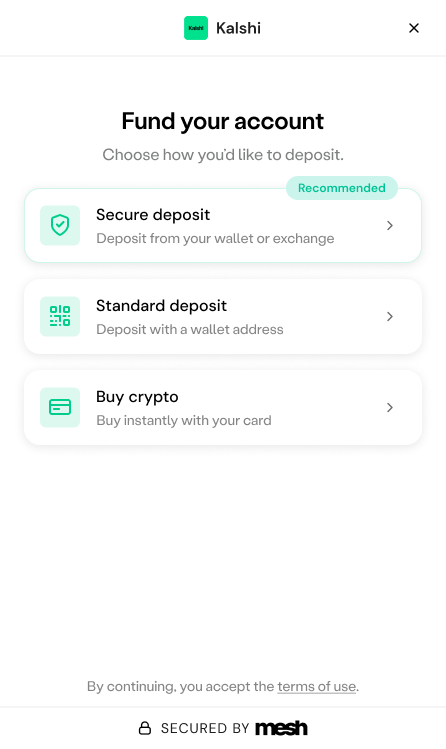
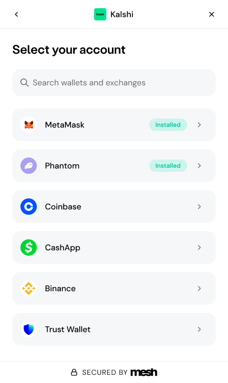
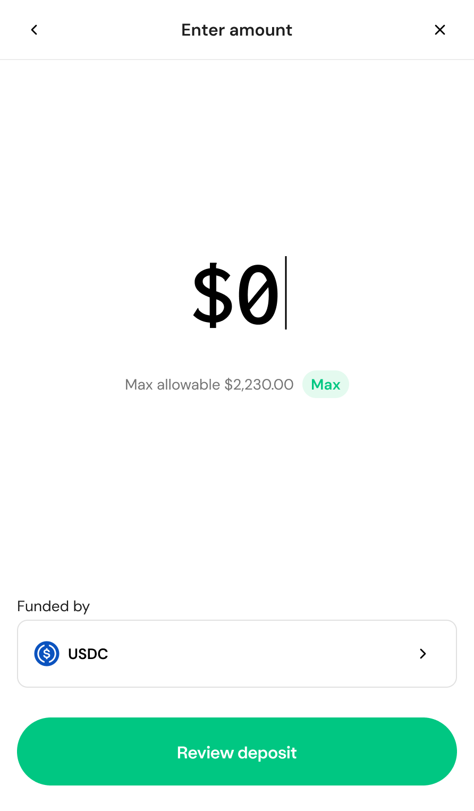
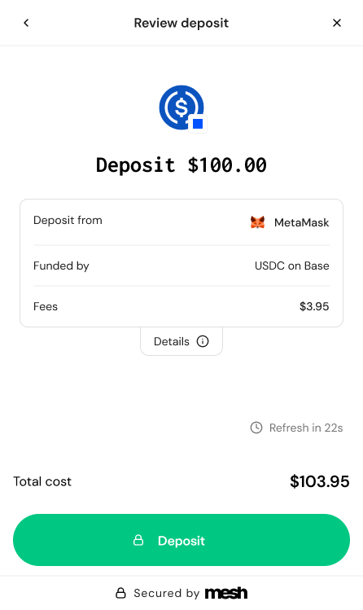
Deposit flow: choose a funding method, select a wallet or exchange, enter an amount, and review fees before confirming.
Key decisions
-
Focus on enter amount
The original Enter amount screen asked users to keep track of two different token controls at once: a token chip at the top showing USDC on Base, and a “Funded by ETH” row at the bottom. A progress stepper sat above both. It was very unclear which token was actually funding the $24 deposit?
I collapsed these into a single Funded by control and removed the stepper, giving the screen one clear job: enter an amount. The amount now sits front and center with its max, the funding source is one clearly labeled row beneath it, and the button reads "Review deposit" instead of "Review" so users know what comes next.
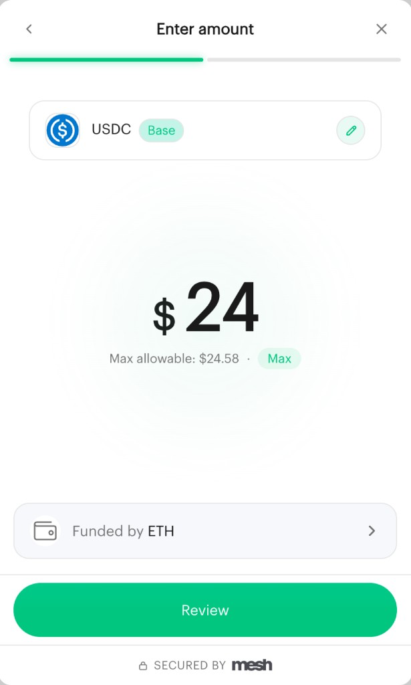
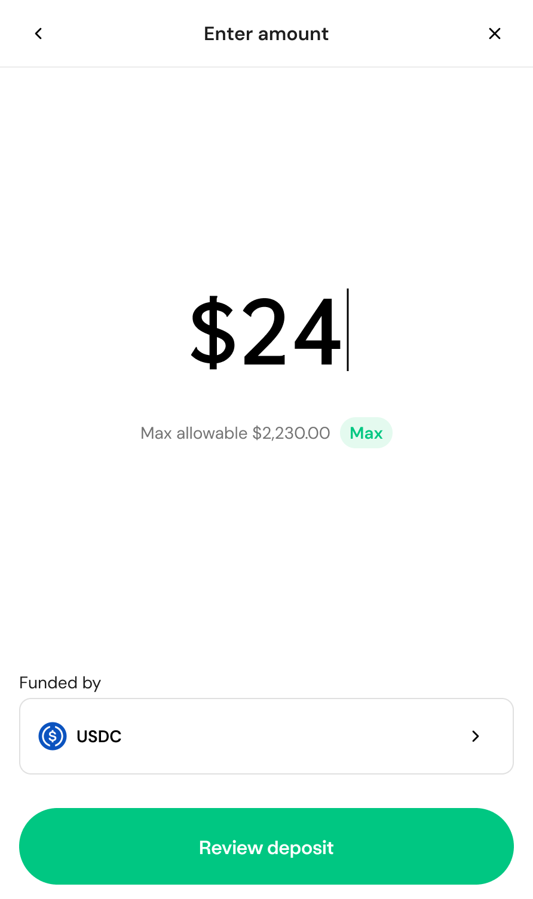
Key decisions
-
Make token selection consistent across wallets and exchanges
The original Choose a token screen displayed every token a user held across every chain in one long list. Tabbed filters, redundant “converted before deposit” labels, and competing information made the experience difficult to parse. There was also a fundamental ambiguity in the UI: users had to distinguish between the token they were selecting and the network it was on, while simultaneously understanding how conversion would work.
I replaced this with a compact Funded by sheet that adapts to the source of funds. For wallets, where users select a single token, the sheet uses radio buttons. For exchanges, where multiple tokens can be combined to fund a deposit, users can select multiple tokens with checkboxes, each capped at its available balance. In both cases, a persistent Total funding amount shows exactly how much will be used, so users never have to calculate it themselves. The underlying flows work differently, but the interaction pattern stays consistent: users choose what will fund the deposit, and the UI clearly shows the resulting total.
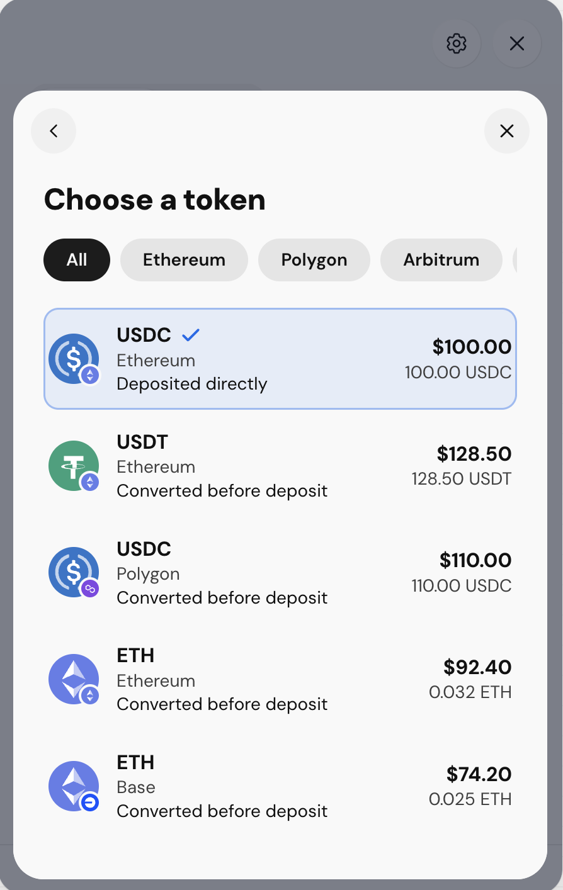
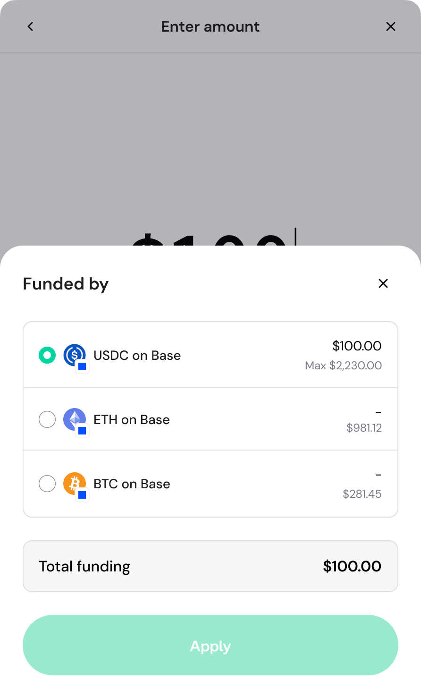
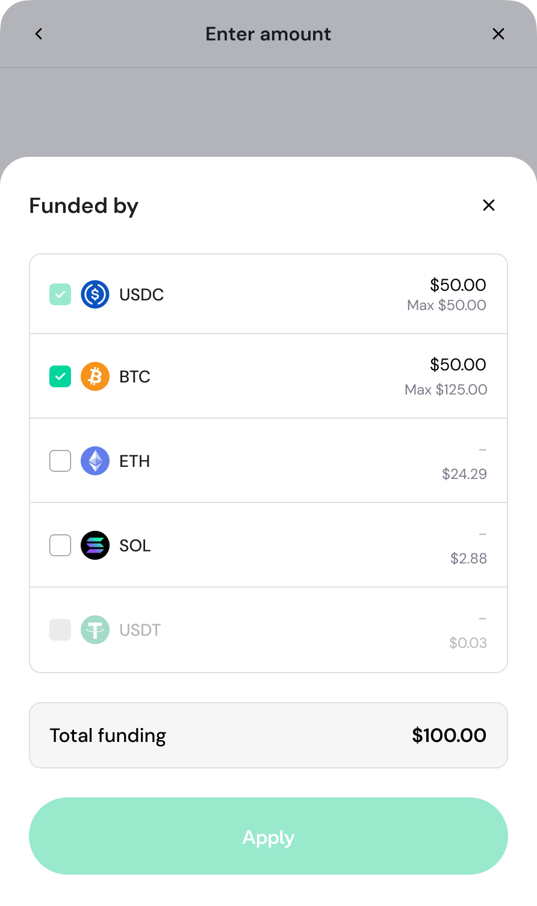
jul 2026
fiat onramp
Context & Role
Mesh is a crypto payments infrastructure company connecting wallets and exchanges to enable seamless transfers between them. I joined as Senior Product Designer, working on the 0→1 full onboarding experience for a brand-new fiat onramp and offramp product. As the lead designer on this surface, I owned the end-to-end flow design — from account creation through KYC verification, bank transfer instructions, and transfer status — partnering closely with product and engineering to take the concept from early framing to a final product.
Beyond being 0→1, the timeline was extremely tight. I designed the full stepped flow in 2 days. KYC verification itself was handled by an external partner, which meant designing a handoff that felt seamless and trustworthy even though Mesh didn't control that part of the experience directly (the user shouldn't feel like they've left the product, even when the underlying verification is happening somewhere else). On top of that, the flow needed a transfer-pending state, since bank transfers don't resolve instantly, and first-time crypto users needed to feel confident their money was safely in motion, not lost.
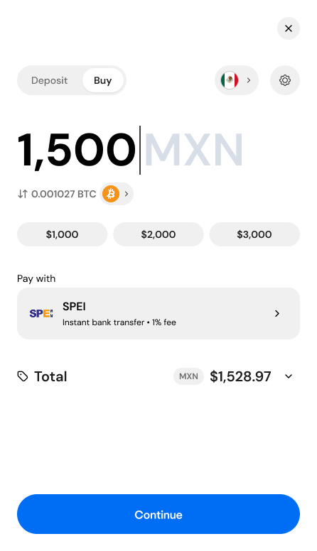
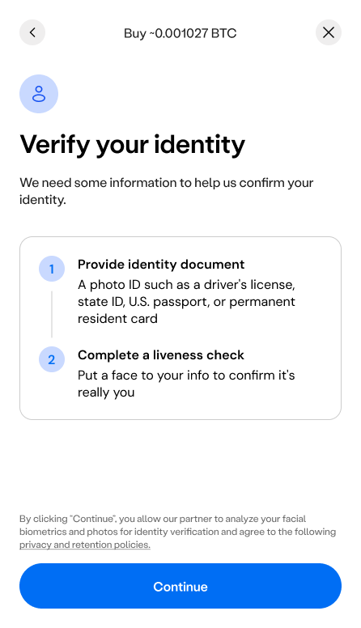
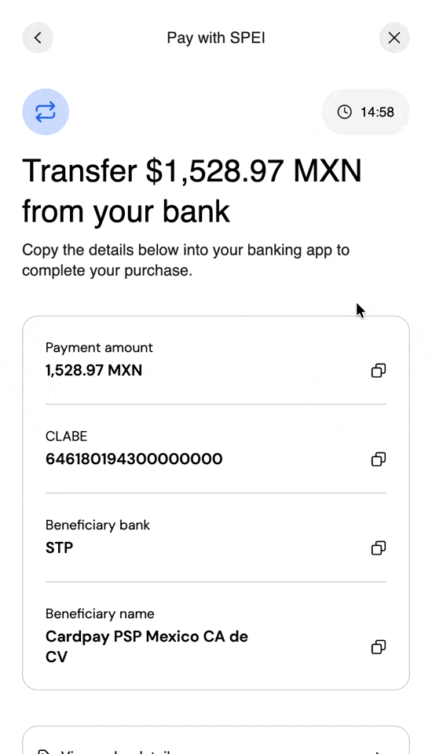
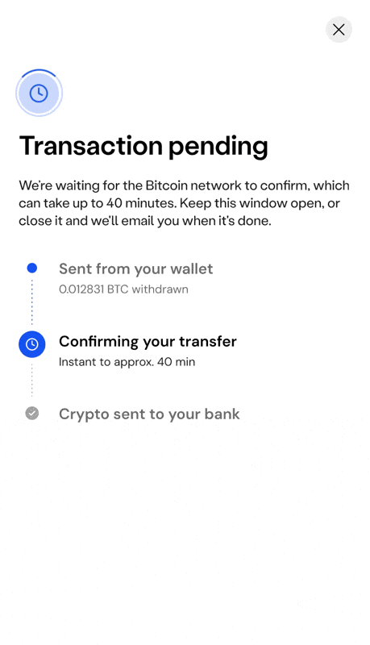
Key decisions
A fiat-to-crypto transfer involves real money moving through an external bank rail (SPEI), which meant failure wasn't an edge case to handle later, it was a core part of the experience from day one. I designed a set of distinct failure and recovery states, each with its own specific message and next action, rather than a single generic error screen:
-
Identity verification failure
Since KYC was handled by an external partner, users needed a clear path forward even when that handoff didn't resolve cleanly: retry, or view an FAQ for more context, rather than a dead end.
-
Payment confirmation
since SPEI transfers happen outside the app, in the user's own banking app, this drawer appears when a user taps the "x" to close the payment instructions screen, prompting them to confirm whether they'd actually sent the transfer before letting them leave the flow. If they'd sent it, they could confirm with "I've sent the payment"; if not, they could cancel the order instead. This closed a real gap: without this check, a user could back out of the flow mid-transfer with no record of their intent, leaving Mesh unable to distinguish an abandoned order from a completed one still in flight.
-
Transfer window expiration
SPEI quotes are time-bound, so if a user didn't complete their bank transfer in time, the payment details were no longer valid. Rather than leaving them stuck on a dead quote, the flow explained what happened and gave a direct path to re-enter the amount and get a fresh quote.
-
Generic purchase failure
A fallback state for failures that didn't fit the more specific cases above, reassuring users that any funds received would be returned, with a direct path to contact support.
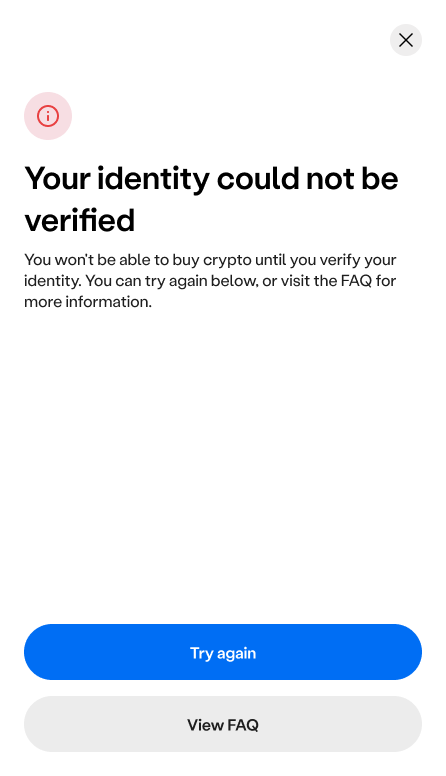
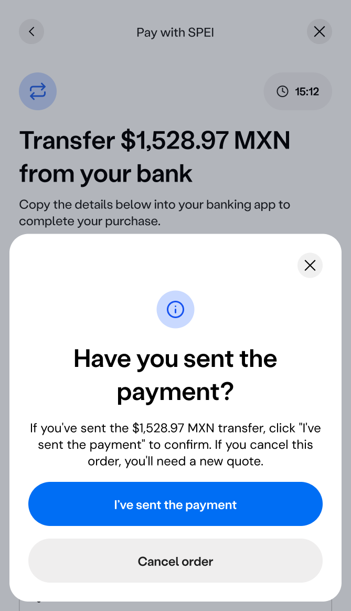
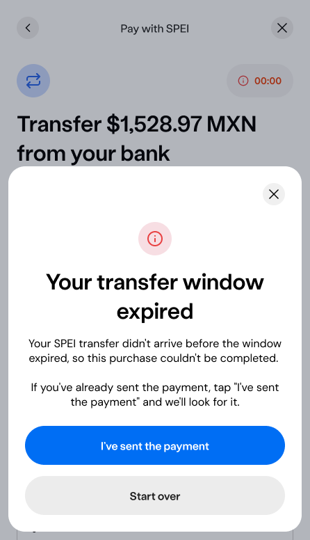
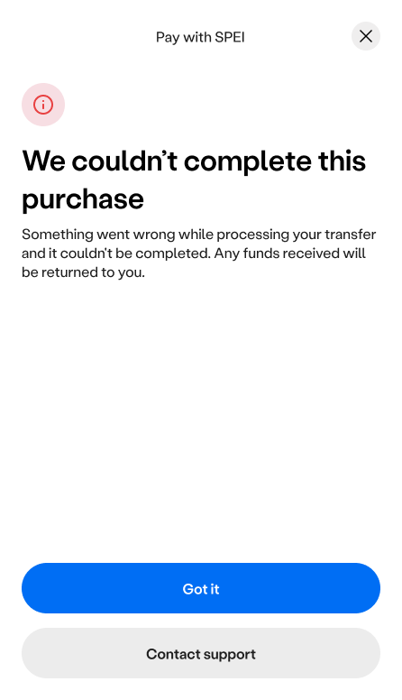
jul 2026
fiat offramp
Extending the buy framework for withdrawing crypto to cash.
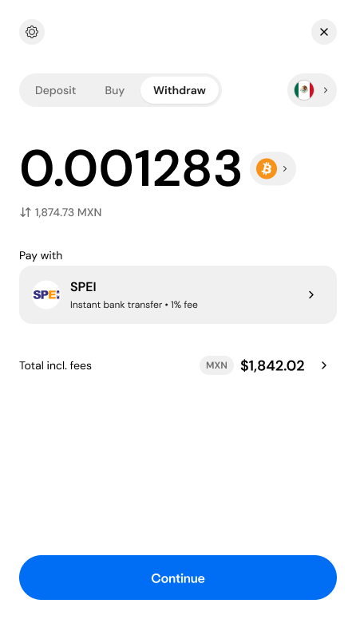
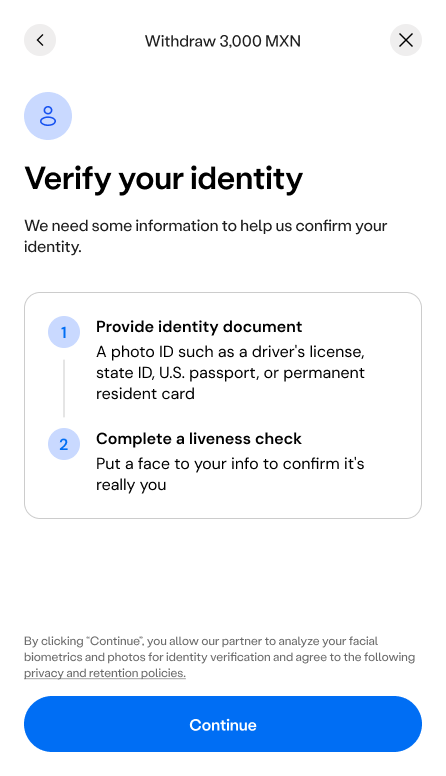
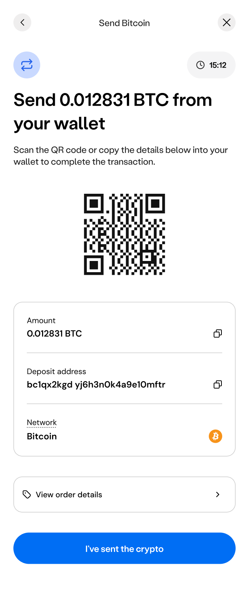
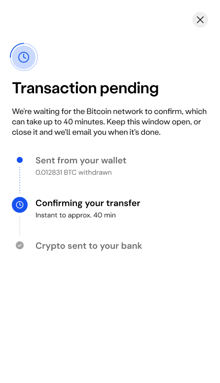
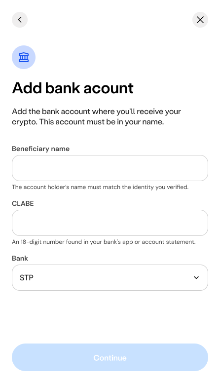
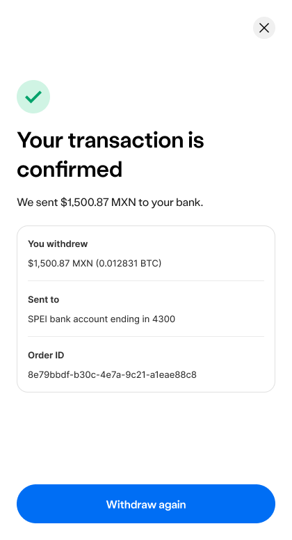
Stepped mobile flow covering KYC verification, bank transfer instructions, and a transfer pending state.